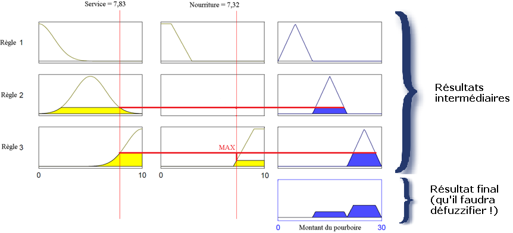

La logique floue est une extension de la logique classique qui permet la modélisation des imperfections des données et se rapproche dans une certaine mesure de la flexibilité du raisonnement humain. Rien que cela :soleil:
La logique floue présente ainsi de nombreuses applications concrètes, allant des jeux vidéo (programmation des bots) aux pilotes automatiques en passant par le micro-onde. Oui, sans que vous le sachiez, elle vous entoure !
Dans ce cours d'introduction, nous définirons les notions de base de la logique floue en les illustrant par un exemple qui sera gardé tout au long du cours. Cet exemple sera la décision du montant du pourboire à l'issue d'un repas au restaurant, en fonction de la qualité du service ressentie ainsi que de la qualité de la nourriture (exemple souvent utilisé pour introduire à la logique floue).
Prérequis : connaissances de base sur les ensembles classiques et la logique classique (booléenne) :p
La logique floue est une extension de la logique booléenne créée par Lotfi Zadeh en 1965 en se basant sur sa théorie mathématique des ensembles flous, qui est une généralisation de la théorie des ensembles classiques. En introduisant la notion de degré dans la vérification d'une condition, nous permettons à une condition d'être dans un autre état que vrai ou faux. La logique floue confère ainsi une flexibilité très appréciable aux raisonnements qui l'utilisent, ce qui rend possible la prise en compte des imprécisions et des incertitudes.
Un des intérêts de la logique floue pour formaliser le raisonnement humain est que les règles sont énoncées en langage naturel. Voici par exemple quelques règles de conduite qu'un conducteur suit, en supposant qu'il tienne à son permis ;)
Si le feu est rouge...
si ma vitesse est élevée...
et si le feu est proche...
alors je freine fort.
Si le feu est rouge...
si ma vitesse est faible...
et si le feu est loin...
alors je maintiens ma vitesse.
Si le feu est orange...
si ma vitesse est moyenne...
et si le feu est loin...
alors je freine doucement.
Si le feu est vert...
si ma vitesse est faible...
et si le feu est proche...
alors j'accélère.
Intuitivement, il semble donc que les variables d'entrée à l'instar de cet exemple sont appréciées par le cerveau de manière approximative, correspondant ainsi au degré de vérification d'une condition de la logique floue. Un système complet de règles basées sur la logique floue et permettant de prendre des décisions est appelé un système d'inférence flou.
Afin d'illustrer chacune des définitions, nous allons concevoir au fil de ce cours un système d'inférence flou. L'objectif sera de décider du pourboire à donner à la fin d'un repas au restaurant en fonction de la qualité du service ainsi que de la qualité de la nourriture :-°
Pour commencer, quelques petits rappels sur les ensembles classiques s'imposent :)
La théorie des ensembles classiques, malgré son nom compliqué, désigne simplement la branche des mathématiques qui étudie les ensembles. Par exemple, {5; 10; 7; 6; 9} est un ensemble d'entiers. {0; 1; 2; 3; 4; 5; 6; 7; 8; 9; 10} est l'ensemble des entiers compris entre 0 et 10. {'s'; 'd'; 'z'; 'a'} est un ensemble de caractères. {"Site"; "du"; "zéro"} est un ensemble de mots. Nous pouvons également créer des ensembles de fonctions, d'hypothèses, de définitions, des ensembles d'individus (c'est-à-dire une population), etc. et même des ensembles d'ensembles !
À noter que dans un ensemble, l'ordre n'a pas d'importance : {7; 6; 9} désigne le même ensemble que {9; 7; 6}. Néanmoins, afin d'améliorer la lisibilité, il est pratique de classer les éléments par ordre croissant, en l'occurrence {6; 7; 9}. Usuellement, un ensemble est désigné par une lettre en majuscule : ainsi, nous écrirons A = {6; 7; 9}. L'ensemble vide est noté \emptyset : c'est un ensemble remarquable car il ne contient aucun élément. Cela semble inutile à première vue, mais en fait, nous allons souvent le croiser !
Les ensembles sont souvent représentés sous forme graphique, typiquement par des cercles :
Représentation graphique de l'ensemble {1; 5; 6; 7; 10}
Le concept d'appartenance est primordial dans la théorie des ensembles : il désigne le fait qu'un élément fasse partie ou non d'un ensemble. Par exemple, l'entier 7 appartient à l'ensemble {6; 7; 9}. A contrario, l'entier 5 n'appartient pas à l'ensemble {6; 7; 9}. Pour simplifier les choses, l'appartenance est symbolisée par le caractère \in et la non-appartenance par le même symbole, mais barré otin. Ainsi, nous avons 7 \in \{6; 7; 9\} et 5 otin \{6; 7; 9\}.
Une fonction d'appartenance (également appelée fonction indicatrice ou encore fonction caractéristique) est une fonction qui explicite l’appartenance ou non à un ensemble E. Soit f la fonction caractéristique de l'ensemble E = \{6; 7; 9\}, et x un entier quelconque : \begin{array}{rcl} f(x) & = & \left\{\begin{matrix} 1 \ \mbox{si} \ x \ \in \ E \\ 0 \ \mbox{si} \ x \ otin \ E \end{matrix} ight. \end{array}
Afin de pouvoir manipuler les ensembles classiques et d'en faire quelque chose d'intéressant, nous définissons un ensemble d'opérations, lesquelles sont très intuitives :
Réunion de 2 ensembles, notée A\cup B=\{x\in A ext{ ou } x\in B\}. A\cup B correspond à la partie en bleu. Par exemple, si A = \{6; 7; 9\} et B = \{1; 5; 6; 7; 10\}, alors A\cup B = \{1; 5; 6; 7; 9; 10\}.
Intersection de 2 ensembles, notée A\cap B=\{x\in A ext{ et } x\in B\} Par exemple, si A = \{6; 7; 9\}} et B = \{1; 5; 6; 7; 10\}, alors A\cap B = \{6; 7\}.
Voici la représentation graphique des ensembles A = \{6; 7; 9\}} et B = \{1; 5; 6; 7; 10\}}. Nous voyons tout de suite que A\cup B = \{1; 5; 6; 7; 9; 10\} et A\cap B = \{6; 7\}. Pratique non ?
Mais détailler la théorie des ensembles classiques n'est pas l'objet de ce cours, donc nous nous arrêtons ici :p
Néanmoins, comme la logique floue se base sur le concept d'appartenance floue, nous voyons dès maintenant le genre de problèmes auxquels nous allons faire face et que nous allons résoudre dans les prochaines sections : comment définir par exemple une union si les appartenances ne sont pas clairement 0 ou 1 ? o_O
La logique floue repose sur la théorie des ensembles flous, qui est une généralisation de la théorie des ensembles classiques. Dire que la théorie des ensembles flous est une généralisation de la théorie des ensembles classiques signifie que cette dernière n'est qu'un cas particulier la théorie des ensembles flous. Pour faire une métaphore en langage ensembliste, la théorie des ensembles classiques n'est qu'un sous-ensemble de la théorie des ensembles flous :lol:
"La théorie des ensembles classiques n'est qu'un sous-ensemble de la théorie des ensembles flous"
Par abus de langage, suivant les us de la littérature, nous utiliserons indifféremment les termes sous-ensembles flous et ensembles flous. Les ensembles classiques sont également appelés ensembles nets, par opposition à flous, et de même la logique classique est également appelée logique booléenne ou binaire.
Voici une figure montrant la fonction d'appartenance choisie pour caractériser le sous-ensemble 'bon' de la qualité du service :
Fonction d'appartenance caractérisant le sous-ensemble 'bon' de la qualité du service
DEFINITION : Soit X un ensemble. Un sous-ensemble flou A de X est caractérisé par une fonction d'appartenancef^{a}: X ightarrow \left[0, 1 ight]. Cette notation veut simplement dire que quel que soit l'entrée X donnée à la fonction f^{a}, sa sortie est un réel entre 0 et 1. En théorie, il est possible que la sortie soit supérieure à 1, mais en pratique cela n'est quasiment jamais utilisé. Note : cette fonction d'appartenance est l'équivalent de la fonction caractéristique d'un ensemble classique.
Dans notre exemple du pourboire, il nous faudra redéfinir des fonctions d'appartenance pour chaque sous-ensemble flou de chacune de nos trois variables :
Input 1 : qualité du service. Sous-ensembles : mauvais, bon et excellent.
Input 2 : qualité de la nourriture. Sous-ensembles : exécrable et délicieux.
Output : montant du pourboire. Sous-ensembles : faible, moyen et élevé.
La forme de la fonction d'appartenance est choisie arbitrairement en suivant les conseils de l'expert ou en faisant des études statistiques : formes sigmoïde, tangente hyperbolique, exponentielle, gaussienne ou de toute autre nature sont utilisables.
Cette figure montre graphiquement la différence entre un ensemble classique et l'ensemble flou correspondant à une nourriture délicieuse :
Représentation graphique d'un ensemble classique (à gauche) et d'un ensemble flou (à droite)
Cette figure compare les deux fonctions d'appartenance correspondant aux ensembles précédents :
Comparaison entre fonction caractéristique d'un ensemble classique (graphique du haut) et fonction d'appartenance d'un ensemble flou (graphique du bas)
Pour pouvoir définir les caractéristiques des ensembles flous, nous redéfinissons et étendons les caractéristiques usuelles des ensembles classiques.
Soit X un ensemble, A un sous-ensemble flou de X et \mu_A la fonction d'appartenance le caractérisant.
DEFINITION : La hauteur de A, notée h(A), correspond à la borne supérieure de l'ensemble d'arrivée de sa fonction d'appartenance : h(A)=\sup\{\mu_A(x) \mid x\in X\}. DEFINITION : A est dit normalisé si et seulement si h(A) = 1. En pratique, il est extrêmement rare de travailler sur des ensembles flous non normalisés. DEFINITION : Le support de A est l'ensemble des éléments de X appartenant au moins un peu à A. Autrement dit, c'est l'ensemble \operatorname{supp}(A) = \{x \in X \mid \mu_A(x)>0 \}. DEFINITION : Le noyau de A est l'ensemble des éléments de X appartenant totalement à A. Autrement dit, c'est l'ensemble noy(A) = \{x \in X \mid \mu_A(x)=1 \}. Par construction, \operatorname{noy}(A) \subseteq \operatorname{supp}(A). DEFINITION : Une \alpha-coupe de A est le sous-ensemble classique des éléments ayant un degré d'appartenance supérieur ou égal à \alpha : \operatorname{\alpha-coupe}(A) = \{x\in X \mid \mu_A(x) \geqslant \alpha\}.
Voici une autre fonction d'appartenance pour un pourboire moyen sur lequel nous avons fait figurer les propriétés précédentes :
Propriétés d'un ensemble flou
Nous remarquons que si A était un ensemble classique, nous aurions simplement \operatorname{supp}(A) = noy(A) et h(A) = 1 (ou h(A) = 0 si A = \emptyset). Nos définitions permettent donc bien de retrouver les propriétés usuelles des ensembles classiques. Nous ne parlerons pas de la cardinalité (c'est-à-dire le nombre d'éléments qu'un ensemble contient) car nous n'utiliserons pas cette notion dans la suite de ce cours. :p
Le concept de fonction d'appartenance vu précédemment nous permettra de définir des systèmes flous en langage naturel, la fonction d'appartenance faisant le lien entre logique floue et variable linguistique que nous allons définir à présent.
DEFINITION : Soit V une variable (qualité du service, montant du pourboire, etc.), X la plage de valeurs de la variable (par exemple, entre 0 et 30€ pour le pourboire) et T_{V} un ensemble fini ou infini de sous-ensembles flous. Une variable linguistique correspond au triplet \left(V,X,T_{V} ight).
Variable linguistique 'qualité du service'
Variable linguistique 'qualité de la nourriture'
Variable linguistique 'montant du pourboire'
Lorsque nous définissons les sous-ensembles flous d'une variable linguistique, l'objectif n'est pas de définir exhaustivement la variable linguistique. Au contraire, nous définirons seulement les sous-ensembles flous qui nous seront utiles plus tard dans la définition des règles que nous appliquerons dessus. C'est par exemple la raison pour laquelle nous n'avons pas défini de sous-ensemble "moyen" pour la qualité de la nourriture. En effet, ce sous-ensemble ne nous sera pas utile dans nos règles ; cela peut être considéré comme étant le fait qu'une nourriture moyenne est considérée comme normale, par conséquent qu'il n'y a rien à signaler en particulier concernant ce fait. De même, c'est également la raison pour laquelle (par exemple) 30 est un pourboire plus élevé que 25, alors que 25 appartient pourtant davantage au sous-ensemble flou "élevé" que 30 : cela est dû au fait que 30 est considéré non pas comme élevé mais très élevé (ou exorbitant si l'on veut changer d'adjectif). Néanmoins, nous n'avons pas créé de sous-ensemble flou "très élevé" car nous n'en avons pas besoin dans nos règles.
Afin de pouvoir manipuler aisément les ensembles flous, nous redéfinissons les opérateurs de la théorie des ensembles classiques afin de les adapter aux fonctions d'appartenance propres à la logique floue permettant des valeurs strictement entre 0 et 1.
Contrairement aux définitions des propriétés des ensembles classiques qui sont toujours les mêmes, la définition des opérateurs sur les ensembles flous est choisie, à l'instar des fonctions d'appartenance. Voici les deux ensembles d'opérateurs pour le complément (NON), l'intersection (ET) et l'union (OU) utilisés le plus couramment :
Dénomination
Intersection ET : \mu_{A\cap{B}}(x)
Réunion OU : \mu_{A\cup{B}}(x)
Complément NON : \mu_\bar{A}(x)
Opérateurs de Zadeh MIN/MAX
min\left(\mu_A(x), \mu_B(x) ight)
max\left(\mu_A(x), \mu_B(x) ight)
1 - \mu_A(x)
Probabiliste PROD/PROBOR
\mu_A(x) imes \mu_B(x)
\mu_A(x) + \mu_B(x) - \mu_A(x) imes \mu_B(x)
1 - \mu_A(x)
Voyons ce que donnent les opérateurs probabilistes PROD/PROBOR si nous notons la qualité de service 1,1 et la qualité de la nourriture 1,19. Avec les fonctions d'appartenance que nous avons défini précédemment, nous avons : \begin{cases} \mu_{mauvais}(1,1) = 0,7642 \\ \mu_{execrable}(1,19) = 0,936667 \end{cases}
En appliquant la règle PROBOR pour le OU, nous obtenons \mu_{mauvais}(1,1) + \mu_{execrable}(1,19) - \mu_{mauvais}(1,1) imes \mu_{execrable}(1,19) = 0,985. De même, en appliquant la règle PROD pour le ET, nous obtenons \mu_{mauvais}(1,1) imes \mu_{execrable}(1,19) = 0,7158.
Voici ce que ces calculs donnent graphiquement :
Voyons à présent ce que nous aurions obtenu si nous avions utilisé les opérateurs de Zadeh MIN/MAX, toujours avec \begin{cases} \mu_{mauvais}(1,1) = 0,7642 \\ \mu_{execrable}(1,19) = 0,936667 \end{cases}
En appliquant la règle MAX pour le OU, nous obtenons max \left( \mu_{mauvais}(1,1), \mu_{execrable}(1,19) ight)= 0,936667. De même, en appliquant la règle MIN pour le ET, nous obtenons min \left(\mu_{mauvais}(1,1), \mu_{execrable}(1,19) ight) = 0,7642.
Voici ce que ces calculs donnent graphiquement :
En résumé, nous constatons que le choix des opérateurs ET et OU influe sur nos résultats. Le tableau récapitulatif suivant met en évidence ces différences :
C'est le concepteur du système flou qui choisira les opérateurs en fonction des connaissances qu'il a sur le système qu'il doit modéliser. Mais bon, ce sont des subtilités ;) À présent, regardons comment les opérateurs sont utilisés au sein du raisonnement flou !
En logique classique, les raisonnements sont de la forme :
En logique floue, le raisonnement flou, également appelé raisonnement approximatif, se base sur des règles floues qui sont exprimées en langage naturel en utilisant les variables linguistiques dont nous avons donné la définition précédemment. En logique, une règle est sous la forme : Si [prémisses] alors [conclusion].
En logique floue, les règles auront des formes telles que : Si x \in A et y \in B alors z \in C Si x \in A alors z \in C Si x \in A ou y \in B alors z \in C avec A, B et C des ensembles flous.
Dans notre exemple, cela donnerait : 'Si (la qualité de la nourriture est délicieuse), alors (le pourboire sera élevé)'. (ce qui correspond à la forme Si x \in A alors z \in C)
La variable 'pourboire' appartient à l'ensemble flou 'élevé' à un degré égal au degré de validité de la prémisse, autrement dit en l'occurrence au degré d'appartenance de la variable 'qualité de la nourriture' à l'ensemble flou 'délicieux'. L'idée sous-jacente est que plus les propositions en prémisse sont vérifiées, plus l'action préconisée pour les sorties doit être respectée. Voici ce que nous obtenons pour la règle floue 'Si (la qualité de la nourriture est délicieuse), alors (le pourboire sera élevé)' lorsque la qualité de la nourriture est notée 8,31 sur 10 :
Application de la règle 'Si (la qualité de la nourriture est délicieuse), alors (le pourboire sera élevé)' avec nourriture = 8,31.
Le résultat de l'application d'une règle floue dépend donc de deux facteurs :
la définition de la fonction d'appartenance de l'ensemble flou de la proposition située en conclusion de la règle floue ;
le degré de validité des propositions situées en prémisse.
En lisant que la qualité de la nourriture est notée 8,31 sur 10, vous vous êtes peut-être demandé : comment avons-nous défini la valeur des variables ? Il faut garder en tête que nous nous plaçons dans le cas où le système est capable de mesurer précisément les inputs. Dans la réalité, la précision des inputs dépend bien sûr de la précision des inputs : dans le cas du pourboire, on pourrait imaginer qu'une personne lamba donne une note à l'unité près (par exemple 8/10 pour la qualité de la nourriture) alors qu'un expert du guide Michelin donne une note à deux décimales près (par exemple 8,31/10 pour la qualité de la nourriture). N'oubliez pas que les systèmes flous sont des systèmes artificiels : ce n'est pas une description du cerveau des humains. Par conséquent, en pratique, il faut s'imaginer par exemple un FPS ou un robot qui reçoit des inputs de façon classique, inputs qui sont le plus souvent sous forme numérique (par exemple, position d'un joueur dans un FPS ou luminosité constatée par les capteurs du robot).
Comme nous avons défini les opérateurs flous ET, OU et NON, la prémisse d'une règle floue peut très bien être formée d'une conjonction (ET) ou disjonction (OU) de propositions floues. L'ensemble des règles d'un système flou est appelé la matrice des décisions. Voici celui de notre exemple du pourboire :
Si le service est mauvais ou la nourriture est exécrable
alors le pourboire est faible.
Si le service est bon
alors le pourboire est moyen.
Si le service est excellent ou la nourriture est délicieuse
alors le pourboire est élevé.
Nous allons maintenant appliquer l'ensemble des 3 règles de notre matrice des décisions. Pour chacune des règles, nous obtenons un résultat intermédiaire (à droite sur le schéma suivant). Pour les régles utilisant l'opérateur OU (règles 1 et 3), nous utiliserons l'opération MAX (cela correspond aux opérateurs de Zadeh MIN/MAX que nous avons vu dans la sous-partie précédente "les opérateurs flous"). Nous agrégerons ces trois résultats intermédiaires en un résultat final en prenant simplement le maximum. Nous voyons le résultat final en bas à droite sur le schéma suivant :

Exemple d'application de l'ensemble des 3 règles de notre matrice des décisions à l'entrée (service = 7,83 ; nourriture = 7,32)
Comme nous le voyons, il ne nous reste plus qu'à prendre la décision finale, à savoir quel pourboire nous allons réellement donner, sachant que la qualité du service est notée 7,83 sur 10 et la qualité de la nourriture 7,32 sur 10. Cette étape finale, qui permet de passer de l'ensemble flou issu de l'agrégation des conclusions à une décision unique, s'appelle la défuzzification. Courage, c'est bientôt fini :D
Comme pour tous les opérateurs flous, le concepteur du système flou doit choisir parmi plusieurs définitions possibles de défuzzification. Nous allons présenter brièvement les deux principales méthodes de défuzzification : la méthode moyenne des maxima (MM) et la méthode du centre de gravité (COG).
La défuzzification MM définit la sortie (décision du montant du pourboire) comme étant la moyenne des abscisses des maxima de l'ensemble flou issu de l'agrégation des conclusions.
Pour ceux qui aiment les formules de maths compliquées (pour les autres, vous pouvez les zapper ;) ), la moyenne des abscisses des maxima se définit ainsi : Decision = frac{\int_S y\cdot dy }{\int_S dy} où S = \left\{y_m \in R, \mu(y_m) = SUP_{y \in R}(\mu(y)) ight\} et R est l'ensemble flou issu de l'agrégation des conclusions.
Défuzzification avec la méthode moyenne des maxima (MM)
La défuzzification COG est plus couramment utilisée. Elle définit la sortie comme correspondant à l'abscisse du centre de gravité de la surface de la fonction d'appartenance caractérisant l'ensemble flou issu de l'agrégation des conclusions.
Pour les cracks des maths curieux, l'abscisse du centre de gravité de la surface se calcule ainsi : Decision = frac{\int_S y\cdot \mu(u) \cdot dy }{\int_S \mu(u) \cdot dy}
(c'est joli non ? :magicien: )
Défuzzification avec la méthode centre de gravité (COG)
Cette définition de la défuzzification COG permet d'éviter les discontinuités qui pouvaient apparaître dans la défuzzification MM, mais est plus complexe et demande des calculs plus importants. Certains travaux cherchent à améliorer les performances en cherchant d'autres méthodes aussi efficaces mais avec une complexité algorithmique moindre. Comme nous le voyons sur les 2 figures montrant les méthodes de défuzzification MM et COG appliquées à notre exemple, le choix de cette méthode a un effet important sur la décision finale.
Au cours des définitions, nous avons vu que le concepteur d'un système flou doit faire un nombre de choix important. Ces choix se basent essentiellement sur les conseils de l'expert ou sur l'analyse statistique des données passées, en particulier pour définir les fonctions d'appartenance et la matrice des décisions.
Voici un aperçu synoptique d'un système flou :
Dans notre exemple :
l'input est 'la qualité du service est notée 7,83 sur 10 et la qualité de la nourriture 7,32 sur 10' ;
le fuzzifier correspond aux 3 variables linguistiques 'qualité du service', 'qualité de la nourriture' et 'montant du pourboire' ;
le moteur d'inférence est constitué du choix des opérateurs flous ;
la base de connaissances floues est l'ensemble des règles floues ;
le defuzzifier est la partie où entre en jeu la méthode de défuzzification ;
l'output correspond à la décision finale : 'le montant du pourboire est 25'.
Il est intéressant de voir l'ensemble des décisions en fonction de chacune des variables avec notre système d'inférence flou par rapport au type d'ensemble de décisions que nous obtiendrions en utilisant la logique classique :
Ensemble des décisions d'un système flou
Ensemble des décisions d'un système se basant sur la logique classique, qui ne peut générer et que des surfaces linéaires Ainsi, toute la puissance de la logique floue est de rendre possible la mise en place de systèmes d'inférence dont les décisions sont sans discontinuité, flexibles et non linéaires, plus proches du comportement humain que ne l'est la logique classique. De plus, les règles de la matrice des décisions sont exprimées en langage naturel. Cela comporte de nombreux avantages, comme inclure des connaissances d'un expert non-informaticien au coeur d'un système décisionnel ou encore modéliser plus finement certains aspects du langage naturel. :soleil:
Je suppose que comme moi beaucoup d'entre vous aiment les jeux vidéo, donc si cela vous intéresse le livre Programming Game AI by Example présente un chapitre entier sur l'application de la logique floue au jeu vidéo avec des exemples de code concrets.
Également pour les curieux, j'ai écrit un mémoire de recherche étudiant plusieurs questions autour de la logique floue :
La logique floue peut-elle expliquer les expériences qui avaient mis à mal les modèles classiques du raisonnement humain au cours du XXe siècle ? Par exemple, le paradoxe sorite qui apparaît lorsque nous posons des questions du genre "combien de grain de sable faut-il pour faire un tas de sable ?". Il existe beaucoup d'autres paradoxes amusants, tel le paradoxe de Hempel.
En quelle mesure les systèmes d'inférence floue reproduisent-ils le raisonnement humain ? Intuitivement, nous avons l'impression que la logique floue ressemble au raisonnement que nous, les humains, faisons. Mais il serait intéressant de quantifier davantage à quel point les humains sont flous. La tâche de sélection de Wason est un exemple amusant mettant à défaut la logique chez les êtres humains.
Serait-ce une bonne idée d'intégrer des mécanismes flous dans les systèmes décisionnels en entreprise ? La plupart des données que les entreprises traitent sont très imparfaites, et il se trouve que la logique floue gère très bien les imperfections. Mais les processus classiques des entreprises peuvent-ils facilement intégrer du flou ? Pas sûr que votre patron à qui vous proposeriez pour la première fois d'intégrer du flou dans ses données ou dans ses décisions vous prenne au sérieux !
Bref, si certains d'entre vous se sont déjà demandé ce que signifie concrètement faire de la recherche en intelligence artificielle, voici le genre de questions auxquelles les chercheurs en intelligence artificielle essayent de répondre :p